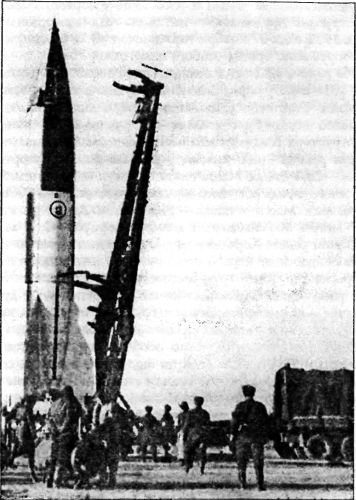
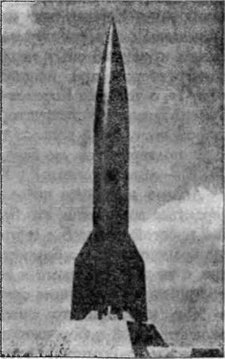

Настоящие баллистические
Нужно заметить, что успехи ракетчиков Третьего рейха произвели сильное впечатление не только на американских военных — весть о ведущихся в Пенемюнде работах дошла и до генералитета Красной Армии.
Первые сведения о немецкой баллистической ракете «Фау-2» советские военные специалисты получили летом 1944 года, когда в нашу страну были доставлены отдельные части этих ракет. Данные, предоставленные англичанами, испытавшими на себе ужасы массированных обстрелов, а также первые выводы привлеченных экспертов, говорили о том, что нацистам удалось создать оружие, не имеющее мировых аналогов. Если лучшие военные образцы отечественных пороховых реактивных снарядов для систем залпового огня «М-13ДД» («Катюша») имели дальность полета 11,8 километра, то первая же боевая немецкая ракета «Фау-2» покрывала расстояние в 25 раз большее — около 300 километров. При этом, как мы помним, она несла головную часть весом в целую тонну, тогда как советский реактивный снаряд «М-31» имел боеголовку массой всего лишь 13 килограммов.
Опыт немецких ракетчиков следовало изучить, и в том же году авиаконструктор Виктор Болховитинов сформировал в составе НИИ-1 группу «Ракета», в которую вошли Александр Березняк, Алексей Исаев, Василий Мишин, Николай Пилюгин, Борис Черток, Юрий Победоносцев и Михаил Тихонравов.
Много лет спустя Исаев напишет об этом так:
«Летом 1944 года в конференц-зал НИИ внесли груду искореженного железа, перемешанного со стекловатой, электрическими проводами, сплющенными коробками, туго начиненными электронной аппаратурой. Это были обломки ракеты ФАУ-2, привезенные из Польши, которой немцы пользовались как полигоном. Конференц-зал на два месяца превратился в мастерскую-лабораторию, где конструкторы, подобно Кювье, восстановившему по одной кости скелет бронтозавра, по рваным кускам листового железа, алюминия, разбитым агрегатам и электровакуумным лампам восстанавливали секретное оружие Гитлера. По этим обломкам было поручено представление о немецкой ракетной технике.
Бригада, где работали И. Ф. Флоров, К. Д. Бушуев и другие, определила баллистические характеристики ракеты, ее назначение, геометрию. Конструкторы сделали общие чертежи, воспроизвели пневмогидравлическую схему двигательной установки, разобрались в системе управления. У двигателистов ОКБ еще больше окрепла вера в необходимость разрабатывать свои ракетные двигатели — простейшие по конструкции, одноразовые, нерегулируемые. Работа над двигателями упрощенной конструкции без повторного запуска началась тут же…»
Важнейшее признание! Конструктор ракетоплана «БИ», глядя на обломки немецкой баллистической ракеты, делает вывод о том, что будущее за одноразовыми ракетами-носителями — достижения «сумрачного германского гения» оказывали поистине завораживающее воздействие!
Свои собственные планы был вынужден пересмотреть и Сергей Королев. Параллельно с очередным проектом высотного ракетоплана он выступил с предложением о создании баллистических ракет дальнего действия на твердом топливе — неуправляемой баллистической «Д-1» и управляемой крылатой «Д-2». Сведения об этом встречаются во многих документах Королева, относящихся к 1944 году. Наиболее полное свое выражение новые планы Сергея Павловича нашли в письме заместителю наркома авиационной промышленности Петру Дементьеву, написанном 14 октября 1944 года, а также в докладе «Необходимые мероприятия для организации работ по ракетам дальнего действия» от 30 июня 1945 года.
Предполагалось, что неуправляемая баллистическая ракета «Д-1», обладающая стартовым весом 1100 килограммов, включая боеголовку весом 200 килограммов, будет иметь дальность полета в пределах 12–13 километров, а крылатая управляемая ракета «Д-2» стартовым весом 1200 килограммов сможет доставить такую боеголовку на расстояние 20–70 километров.
В письме заместителю наркома от 14 октября 1944 года Королев предлагает организовать работы по ракетам дальнего действия непосредственно в Казани: «…реорганизовать бюро реактивных установок завода № 16 (группа инженера С. П. Королева) в Специальное бюро, создать необходимую экспериментальную и производственную базу». Здесь же намечаются контуры будущей кооперации Спецбюро по изготовлению деталей и узлов ракет, разработке и изготовлению приборов автоматического управления, пороховых шашек крупного размера, кооперация с бывшим РНИИ по научным исследованиям. Позднее поднимался вопрос и об организации Спецбюро по ракетам дальнего действия в Москве.
Окончание войны внесло свои коррективы. В августе 1945 года, после завершения работы Потсдамской конференции, заместитель наркома вооружений Василий Рябиков сформировал Межведомственную техническую комиссию для изучения трофейной ракетной техники. Из сотрудников «Ракеты» было образовано несколько групп, три из которых возглавили генералы Лев Гайдуков, Александр Тверецкий и Андрей Соколов. После формирования группы отбыли в Германию и приступили к сбору документации и изучению техники в Берлине, Тюрингии и Пенемюнде. Через месяц по представлению Рябикова выехал в Германию и Сергей Королев.
Помимо Германии, разрозненные коллективы исследователей осели в Польше, Австрии и Чехословакии. Объем работ оказался поистине необъятным, и с целью повышения эффективности изучения сложной техники в марте 1946 года было решено образовать на территории ракетного центра Пенемюнде единую научную организацию — институт «Нордхаузен». Возглавил этот институт генерал Лев Гайдуков. Своим заместителем и главным инженером он назначил Сергея Королева.
13 мая 1946 года по итогам работы института «Нордхаузен» было принято постановление ЦК ВКП(б) и Совета Министров СССР о развитии реактивной техники в стране. Министерство вооружений, возглавляемое главным «артиллеристом» страны генералом-полковником Дмитрием Федоровичем Устиновым, определено головным по разработке и производству баллистических ракет дальнего действия и зенитных управляемых ракет. Были созданы Главные управления по реактивной технике в ряде министерств, а также Управления реактивного вооружения в ГАУ Советской Армии и в Военно-Морском Флоте. Начальником управления реактивного вооружения Главного артиллерийского управления назначен генерал-майор инженерно-технической службы Андрей Соколов.
В постановлении от 13 мая 1946 года было отмечено, что работы, выполняемые министерствами и ведомствами по ракетному вооружению, контролируются Специальным Комитетом по реактивной технике. Никакие учреждения, организации и лица, без особого разрешения Совета Министров, не имеют права вмешиваться в процесс создания ракетного оружия. Этим же постановлением было определено, что головными по разработке и производству ракетного вооружения являются Министерство вооружений (ракеты на жидком топливе), Министерство сельскохозяйственного машиностроения (пороховые ракеты) и Министерство авиационной промышленности (реактивные самолеты-снаряды).
16 мая 1946 года приказом министра вооружений Дмитрия Устинова на базе артиллерийского завода № 88 (расположенного неподалеку от подмосковной станции Подлипки) был создан сверхсекретный Научно-исследовательский институт № 88 Министерства вооружений СССР (НИИ-88). Это была первая в Советском Союзе организация по созданию серийной ракетной техники. Директором НИИ-88 был назначен видный организатор производства Лев Гонор, возглавлявший один из артиллерийских заводов, главным инженером — Юрий Победоносцев.
А уже 9 августа 1946 года Сергей Королев возглавил работы над отечественным аналогом «Фау-2», получившем обозначение «Изделие № 1».
Выше я уже отмечал, что советским ракетчикам, командированным в Германию, досталось гораздо меньше материалов по немецкой ракетной программе, чем их американским коллегам. Тем не менее к августу 1946 года им все же удалось собрать количество деталей, достаточное для сборки двадцати ракет. Половина ракет была собрана непосредственно в Германии, остальные части вывезены в СССР.
В начале 1947 года, изучив конструкторскую документацию, группа сотрудников «Нордхаузена» покинула Пенемюнде. Прибыв в Подлипки, инженеры немедленно приступили к созданию ракет.
Коллектив Сергея Королева, входящий в отдел № 3 Специального конструкторского бюро (СКВ) НИИ-88, последовательно прошел все этапы освоения ракеты «Фау-2» — от изучения на месте документации на прототип до его воспроизводства в отечественных условиях и летных испытаний.
Для проведения испытаний был построен Государственный центральный полигон № 4 Министерства обороны. Его создали в междуречье Волги и Ахтубы в 100 километрах юго-восточнее Сталинграда, неподалеку от населенного пункта Капустин Яр Астраханской области.
Первая серия из десяти опытных ракет «Фау-2» под индексом изделие «Т» была собрана на опытном заводе НИИ-88 в Подлипках. В октябре 1947 года эти ракеты доставили на территорию 4-го полигона. Первое огневое испытание ракеты «Фау-2» состоялось 16 октября 1947 года на стенде в Капустином Яру, еще через два дня года с полигона был осуществлен первый в нашей стране пуск баллистической ракеты дальнего действия. Ракета пролетела 206,7 километра, поднявшись на высоту 86 километров, отклонившись от цели на 30 километров влево. Большой воронки на месте падения не оказалось — ракета разрушилась при входе в плотные слои атмосферы. Это был далеко не блестящий результат, но, главное, ракета полетела.
Во втором пуске, состоявшемся 20 октября, снова использовали ракету серии «Т». Еще на активном участке пусковики зафиксировали сильное отклонение влево от расчетной траектории. Тем не менее ракета благополучно одолела дистанцию в 231,4 километра, отклонившись на 180 километров. Изучение гироскопов управления на вибростенде выявило сильную помеху, возникающую в электрической цепи при определенном режиме полета.
Во втором цикле испытаний, начатом после доработки системы управления, были запущены 4 ракеты серии «Т» и 5 ракет серии «Н», собранных советскими и немецкими специалистами в Германии на заводе «Кляйнбодунген». До цели дошли только 5 из 9, показав дальность в 274 километра. Максимальная масса ракеты при этом составляла 12,7 тонны.
Пуски ракет осуществляла бригада особого назначения резерва Верховного Главнокомандования. Она была сформирована на базе гвардейского минометного полка 15 августа 1946 года вблизи деревни Берка земли Тюрингия восточнее города Зондерсхаузен в Германии. Бригада подчинялась непосредственно командующему артиллерией Советской Армии, ее командиром назначили генерала Александра Тверецкого. Это было первое в СССР войсковое подразделение, осуществлявшее пуски тяжелых ракет. Летом 1947 года личный состав бригады переехал из Германии в СССР, на полигон Капустин Яр, и, обустроившись, приступил к испытаниям.
Параллельно с летно-конструкторскими испытаниями «Фау-2» и оценками результатов пусков коллектив СКБ Королева делал ее советский аналог — ракету «Р-1», частично свободную от недостатков прототипа (в основном в части надежности). Разработкой жидкостного ракетного двигателя «РД-100» для «Р-1» занималось Опытное конструкторское бюро № 456 (ОКБ-456) под руководством Валентина Глушко; разработкой системы управления — коллективы Николая Пилюгина, Виктора Кузнецова и Михаила Рязанского; созданием наземного комплекса средств обеспечения запуска ракеты — Государственное союзное конструкторское бюро специального машиностроения (ГСКБ «Спецмаш») под руководством Владимира Бармина.
В результате этих работ получилась одноступенчатая тактическая баллистическая ракета, имеющая следующие характеристики: максимальная дальность полета ракеты — 270 километров, максимальная стартовая масса — 13,4 тонны, сухая масса ракеты — 4 тонны, масса головной части — 1 тонна, масса боевого заряда обычного взрывчатого вещества — 785 килограммов, длина ракеты — 14,6 метра, максимальный диаметр корпуса — 1,65 метра, система управления — автономная, инерциальная, способ старта — газодинамический, топливо — этиловый спирт и жидкий кислород.
В состав ракетного комплекса «Р-1» входили двадцать транспортных единиц, агрегатов и систем наземного оборудования. Перед запуском ракеты в бак с перекисью водорода подавался катализатор. В результате реакции образовывался парогаз, под давлением поступавший в турбонасос двигателя. Раскручиваясь, турбонасос подавал в камеру сгорания этиловый спирт и жидкий кислород. Воспламенение образовавшегося топлива осуществлялось с помощью пиротехнического устройства.
Таким образом, для работы первой ракеты требовались четыре жидких компонента, что было далеко от совершенства, так как ракета не хранилась в заправленном состоянии и необходимо было располагать емкостями для жидких пожароопасных веществ вблизи боевых позиций. Общее время подготовки ракеты к старту — 6 часов. Из них 2 часа занимала подготовка на технической позиции и 4 часа — на стартовой позиции. Радиус разрушения городских зданий при попадании ракеты не превышал 25 метров. Если сопоставить этот показатель с тем, что круговое вероятное отклонение «Р-1» от цели при полете на максимальную дальность составляло 1500 метров, то становится ясным, насколько низка была эффективность нового вида оружия.
Первый пуск ракеты «Р-1» состоялся 10 октября 1948 года на полигоне Капустин Яр. Весь же цикл испытаний, в ходе которых было произведено 20 пусков, продолжался год. Еще столько же времени ушло на доработку.
Лишь 28 ноября 1950 года первая баллистическая ракета «Р-1» вместе с комплексом наземного оборудования была принята на вооружение первого ракетного соединения. Соединение, сформированное на полигоне Капустин Яр, получило название 22-я особого назначения Гомельская ордена Ленина, Краснознаменная, орденов Суворова, Кутузова и Богдана Хмельницкого бригада РВГК
С первых дней боевого дежурства в 1950 году до марта 1955 года управление ракетными соединениями осуществлялось командующим артиллерией Советской Армии Главным маршалом артиллерии Митрофаном Неделиным на основе принципов управления артиллерией.
Позже бригады, вооруженные ракетными комплексами «Р-1» (индекс 8А11), несли боевое дежурство неподалеку от городов Медведь Новгородской области, Камышин Волгоградской области, Белокоровичи на Украине, Шяуляй в Литве, Джамбул в Казахстане, Орджоникидзе в Северной Осетии, в районе села Раздольное Приморского края. Бригада «Р-1» состояла из трех огневых дивизионов. В каждом дивизионе имелись две стартовые батареи с пусковыми установками ракет. Таким образом, на вооружении бригады было шесть пусковых установок «Р-1».

К сожалению, большинство принципиальных недостатков системы типа «А-4» («Фау-2»), быстро выявленных советскими специалистами, можно было преодолеть только перейдя к ракетам новой схемы.
Еще будучи в Германии и изучая трофейную технику, Сергей Королев понял, что на основе «Фау-2» можно создать более совершенную ракету с дальностью в 600 километров. Установив, что немецкий жидкостный ракетный двигатель поддается форсированию по тяге на 16–35 %, Королев предложил несколько вариантов новой ракеты, один из которых был принят за основу.
Предполагалось, что ракета, получившая обозначение «Р-2», будет в основном аналогична «Фау-2», за исключением удлиненного отсека баков увеличенной емкости.
После воспроизведения «А-4» нашими специалистами в отечественных условиях, высшее руководство предполагало начать разработку ракеты на дальность сразу в 3000 километров. Однако трезво оценив трудности такого качественного скачка, Сергей Королев предложил двигаться к цели постепенно, шаг за шагом проходя определенные этапы. Одним из них и должна была стать «Р-2».
Летные испытания экспериментальной «Р-2Э», имеющей определенные отличия от основного проекта «Р-2», проводились в сентябре-октябре 1949 года на полигоне Капустин Яр.
Испытательные пуски и работы по совершенствованию конструкции продолжались почти два года и завершились в июле 1951 года 27 ноября того же года «Р-2» была принята на вооружение бригад особого назначения РВГК.
На ракете «Р-2» стоял жидкостный маршевый двигатель «РД-101» конструкции Валентина Глушко с тягой у земли в 37 тонн. Стартовое устройство — стационарный наземый пусковой стол — было создано под руководством главного конструктора Владимира Бармина. Максимальная дальность полета ракеты — 600 километров. Максимальная стартовая масса — 20,4 тонны. Масса головной части — 1,5 тонны. Масса боевого заряда обычного взрывчатого вещества — 1008 килограммов. Масса топлива — 14,5 тонны. Длина ракеты — 17,7 метра. Максимальный диаметр корпуса — 1,65 метра.
В этой ракете Королев впервые применил головную часть, отделяющуюся от первой ступени после выгорания топлива Отбросив ненужный груз, боеголовка могла пролететь большее расстояние. Снижению массы способствовала и другая новинка — применение несущего бака горючего, выполненного из легких алюминиевых сплавов. Для увеличения тяги двигателя Глушко увеличил число оборотов турбины, повысил концентрацию этилового спирта и давление в камере сгорания. С целью повышения точности стрельбы на дальние расстояния коллектив под руководством главного конструктора Михаила Борисенко разработал систему боковой радиокоррекции. Применение системы уменьшило рассеивание боеголовок, но усложнило эксплуатацию ракеты. Комплекс включал две наземные радиолокационные станции, которые следили за полетом, и позволяли команде управления корректировать боковой снос. Тротиловый заряд увеличенной массы создавал при взрыве зону сильных разрушений площадью 950 квадратных метров.
Конструкторам не удалось повысить боеготовность комплекса. Время общей подготовки к старту осталось прежним — 6 часов. Боевое дежурство заправленной ракеты ограничивалось пятнадцатью минутами. После этого необходимо было либо пускать ее, либо переносить запуск на следующие сутки. Слив кислорода, горючего, проверка систем и повторная заправка требовали длительного времени.
Первые учебно-боевые пуски «Р-2» в войсках были проведены на сборах командного состава ракетных частей в 1952 году. А еще через год состоялись уникальные в своем роде испытания, получившие название «Герань» и «Генератор».
Суть экспериментов заключалась в следующем. В головной части ракеты была помещена емкость с радиоактивной жидкостью. При достижении заданного района на большой высоте производился подрыв заряда, при этом жидкость распылялась над поверхностью Земли, оседая в виде радиоактивных осадков. В головной части «Р-2», которая запускалась по эксперименту «Генератор», также была помещена радиоактивная жидкость, но не в общей емкости, а в большом количестве малых сосудов, каждый из которых разрывался над Землей самостоятельно. Много позже подобное оружие получило название радиологического, а то, насколько оно может быть эффективным, зримо продемонстрировал Чернобыль в 1986 году.
Оба этих пуска прошли успешно. Ракеты стартовали с полигона Капустин Яр и взрывались над пустынными районами северо-восточного Казахстана. Эксперименты дали возможность оценить распространение радиоактивных осадков на поверхности Земли.
6 декабря 1957 года было принято постановление правительства о безвозмездной передаче Китайской Народной Республике лицензии на производство «Р-2», а также полного комплекта технической документации.

Тем временем политический климат в мире резко охладился. В воздухе снова «запахло грозой». По мнению советских руководителей, угроза новой войны исходила теперь от Вашингтона и его союзников на западе Европейского континента. Несмотря на то что после возникновения блока «социалистических стран-союзниц» непосредственная угроза была отодвинута от границ Советского Союза, базирование бомбардировщиков потенциального противника с атомным оружием в Западной Европе и Азии делало оборону СССР весьма уязвимой. В этих условиях в качестве средства противодействия было решено использовать баллистические ракеты с большой дальностью полета.
Еще в апреле 1948 года было принято постановление Совета Министров о продолжении работ по «Р-1» и «Р-2» и конструированию ракет на дальность полета в 3000 километров.
Обсуждалось несколько различных вариантов летательных аппаратов, которые можно было использовать в качестве средства доставки боезаряда на дальние расстояния. Пытаясь определить потенциальные возможности крылатых ракет, главный конструктор поручил своему коллективу проработку, помимо баллистического варианта «БН», двух вариантов крылатой ракеты. О достоинствах и недостатках крылатых ракет Королев знал не понаслышке, ведь фактически он начинал с них, работая в ГИРДе. Однако и тут свою роль сыграл немецкий опыт: неудачи, преследовавшие немецких конструкторов при испытаниях и боевом применении «Фау-1», о которых Королев был наслышан в Германии, побудили главного конструктора более осторожно подойти к старой теме. Было решено проработать эскизные проекты двух подвариантов экспериментальной крылатой ракеты (ЭКР) — одноступенчатой («КН») и составной («КС»).
Анализ вариантов позволил Королеву окончательно утвердиться во мнении, что будущее за баллистической ракетой простой схемы. Все другие пути требовали гораздо больше времени и сил, а баллистическая ракета дальнего действия, с учетом немецкого и собственного опыта, могла быть построена в кратчайшие сроки. Именно в конце 40-х (а не в 30-е, как принято считать) Сергей Павлович сделал окончательный выбор, которому остался верен всю последующую жизнь. Возможно, этот выбор был ошибкой, но мы не вправе сегодня осуждать конструктора, ведь он отвечал за свои решения головой и не имел права на риск.
Новую ракету «Р-3» делали одноступенчатой, с несущими баками, хвостовым отсеком без аэродинамических стабилизаторов и с отделяющейся головной частью. Двигатель для «Р-3», обладающий исключительно высокими для своего времени характеристиками, на конкурсной основе проектировали два конструкторских коллектива — ОКБ-456 Валентина Глушко и НИИ-1 Министерства авиационной промышленности (МАП) под руководством Александра Полярного. Всеми работами по плану «Р-3» руководил лично Сергей Королев.
Отдельные конструктивные решения для новой ракеты предполагалось отработать на модифицированной «Р-2» и специально созданной экспериментальной летающей модели — ракете «Р-3А». Особые трудности возникли при разработке двигателя и обеспечении требуемого конструктивного совершенства — высокого отношения массы заправленной ракеты к сухой массе. Не все было ясно с обеспечением целостности головной части при ее входе в атмосферу с высокими гиперзвуковыми скоростями.
Эскизный проект «Р-3» утвердили в декабре 1949 года с рекомендацией принять в качестве ближайшей задачи создание ракеты «Р-3А» дальностью 935 километров для отработки в натурных условиях конструкции, двигателя и системы управления ракеты «Р-3».
Планировалось начать летно-конструкторские испытания ракеты «Р-3А» в октябре 1951 года, но проектные проработки показали, что, несколько изменив назначение ракеты, можно достаточно быстро получить качественно новое изделие — боевой ракетный комплекс с дальностью действия более 1000 километров.
К исходу 1949 года рамки отдела № 3 НИИ-88 стали тесны для быстро растущего конструкторского коллектива под руководством Сергея Королева, и 30 апреля 1950 года вышел приказ Министра вооружений о преобразовании СКВ в Опытное конструкторское бюро № 1 (ОКБ-1) по разработке ракет дальнего действия (начальник и главный конструктор — Сергей Королев) и ОКБ-2 по разработке зенитных ракет (и.о. начальника и главного конструктора — Карл Тритко). Еще через полтора месяца заместителем начальника ОКБ-1 назначили Василия Мишина, а заместителем главного конструктора — Василия Будника.
Работы по проекту «Р-3» еще не закончились, а Королеву уже стало ясно, что дальность полета в 3000 километров недостаточна. Актуальным становилось создание мощной межконтинентальной ракеты. Для решения этой задачи в соответствии с постановлением Совета Министров от 4 декабря 1950 года в научно-исследовательских разработках по темам «Н-1», «Н-2» и «Н-3» провели углубленные и расширенные исследования по новым схемам ракет, двигателей и топлив. Однако необходима была и ракета, способная поражать цели в оперативной глубине обороны противника. Такой ракетой стала машина, созданная на базе «Р-3А» и получившая обозначение «Р-5».
Работа над «Р-5» велась в конструкторском бюро Королева с конца сороковых годов. Новая ракета должна была иметь дальность полета, вдвое превышающую дальность предыдущего серийного изделия. В истории отечественного ракетостроения ей суждено остаться первой ядерной ракетой.
В 1951 году был закончен эскизный проект, и через год вышло решение правительства страны о создании баллистической ракеты, обладающей дальностью полета свыше 1000 километров. Первый старт состоялся 2 апреля 1953 года на полигоне Капустин Яр. После испытательных запусков 15 ракет и доработок по результатам испытаний в 1955 году «Р-5» была принята на вооружение инженерных бригад РВГК.
«Р-5» имела жидкостный маршевый двигатель «РД-103» конструкции Валентина Глушко тягой в 41 тонну, созданный на базе двигателя ракеты «Р-1» путем его максимального форсирования, снабженный специальным сопловым насадком. Оба бака (окислителя и горючего) стали несущими и оснащались системой уменьшения невыработанных остатков топлива, приборы системы автономного управления (СУ) располагались в двух отсеках — хвостовом (над двигателем) и межбаковом и дополнялись приборами радиоуправления боковой дальностью, позволяющей уменьшить рассеивание головных частей на максимальной дальности. Для управления на активном участке полета применялись сверхзвуковые газовые рули новой конструкции. Все решения, направленные на улучшение основных конструктивных показателей ракеты, стали стандартными и применялись впоследствии на изделиях разработки ОКБ-1.
Максимальная дальность полета «Р-5» составляла 1200 километров. Максимальная стартовая масса — 26 тонн. Длина ракеты — 20,75 метра. Максимальный диаметр корпуса — 1,65 метра. Система управления — инерциальная с радиокоррекцией траектории полета. Способ старта — газодинамический. Топливо — этиловый спирт и жидкий кислород.
Кроме основной головной части ракета могла нести от двух до четырех подвесных (боковых) боеголовок, снаряженных обычным взрывчатым веществом. При этом максимальная дальность полета снижалась до 810 и 560 километров соответственно.
«Р-5» не получила большого распространения в войсках, явившись лишь базой для создания ракеты, оснащенной ядерной боеголовкой. Уже в 1961 году ракета «Р-5» была снята с боевого дежурства.